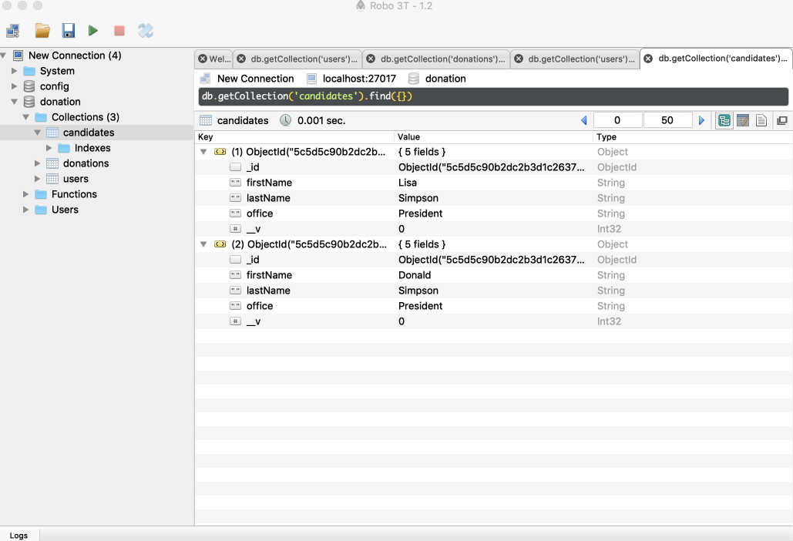
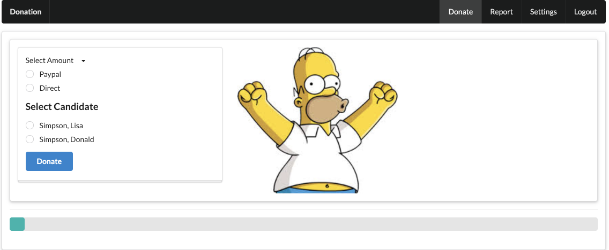
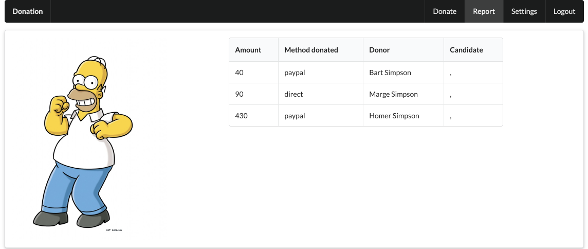
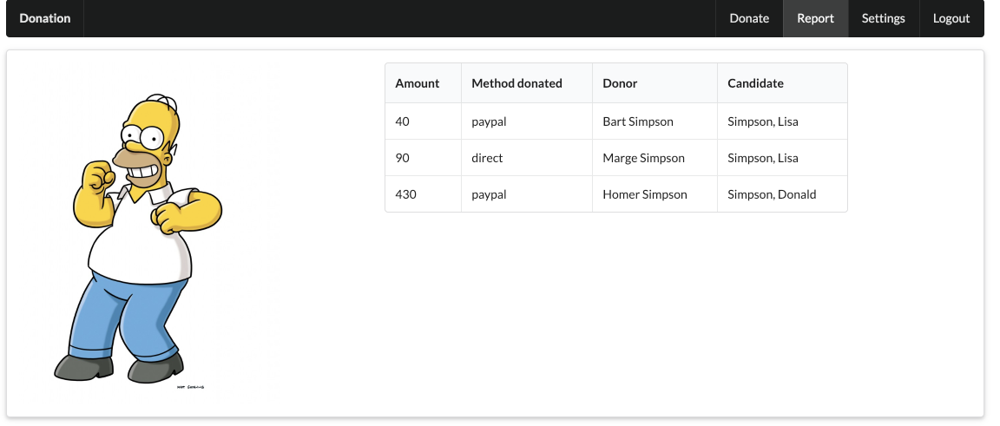

Objectives
Include a mongoose seeder component in the application. Use this to validate a new Candidate model, preloading it with a json specified object graph.
Mongoose Seeder Utility
During development it can often aid productivity if we can devise some mechanism for populating our database easily. In particular, this will enable is to pre-load the database on startup, so we can proceed to explore various scenarios without having manually enter a range of sample data.
This component here is a useful approach to this:
Install the component into your app now:
npm install mais-mongoose-seeder{
"name": "donation-web",
"version": "1.0.0",
"description": "",
"main": "index.js",
"scripts": {
"start": "node index.js",
"test": "echo \"Error: no test specified\" && exit 1"
},
"author": "",
"license": "ISC",
"dependencies": {
"boom": "^7.3.0",
"dotenv": "^6.2.0",
"handlebars": "^4.0.12",
"hapi": "^18.0.0",
"hapi-auth-cookie": "^9.1.0",
"inert": "^5.1.2",
"joi": "^14.3.1",
"mais-mongoose-seeder": "^1.0.7",
"mongoose": "^5.4.7",
"vision": "^5.4.4"
},
"devDependencies": {
"prettier": "^1.16.0"
},
"prettier": {
"singleQuote": true,
"printWidth": 120
}
}Starting with a sample user + a donation:
app/models/initdata.json
{
"users": {
"_model": "User",
"homer": {
"firstName": "Homer",
"lastName": "Simpson",
"email": "homer@simpson.com",
"password": "secret"
}
},
"donations": {
"_model": "Donation",
"one": {
"amount": 40,
"method": "paypal",
"donor": "->users.homer"
}
}
}Note how the relationship between a user and a donation is represented as ->users.homer in this example.
We can load this is db.js by first introducting a new function to seed the database:
app/models/db.js
async function seed() {
var seeder = require('mais-mongoose-seeder')(Mongoose);
const data = require('./initdata.json');
const Donation = require('./donation');
const User = require('./user');
const dbData = await seeder.seed(data, { dropDatabase: false, dropCollections: true });
console.log(dbData);
}Then we can call the seeder when the database is first opened successfully:
db.once('open', function() {
console.log(`database connected to ${this.name} on ${this.host}`);
seed();
})Try this now. When you restart the app it will delete the contents of the database and then populate with the two objects. Verify that the users and donations collections are as specified in the json file above.
We are logging the preloaded objects in the console:
preloading Test Data
{ users:
{ homer:
{ __v: 0,
firstName: 'Homer',
lastName: 'Simpson',
email: 'homer@simpson.com',
password: 'secret',
_id: 57a738e1edbdf4a41777d25b } },
donations:
{ one:
{ __v: 0,
amount: 40,
method: 'paypal',
donor: 57a738e1edbdf4a41777d25b,
_id: 57a738e1edbdf4a41777d25c } } }More Preloaded Objects
A more extensive set of objects:
app/models/data.json
{
"users": {
"_model": "User",
"homer": {
"firstName": "Homer",
"lastName": "Simpson",
"email": "homer@simpson.com",
"password": "secret"
},
"marge": {
"firstName": "Marge",
"lastName": "Simpson",
"email": "marge@simpson.com",
"password": "secret"
},
"bart": {
"firstName": "Bart",
"lastName": "Simpson",
"email": "bart@simpson.com",
"password": "secret"
}
},
"donations": {
"_model": "Donation",
"one": {
"amount": 40,
"method": "paypal",
"donor": "->users.bart"
},
"two": {
"amount": 90,
"method": "direct",
"donor": "->users.marge"
},
"three": {
"amount": 430,
"method": "paypal",
"donor": "->users.homer"
}
}
}The position of the commas is very important here - as they are separators, not terminators. Try adding an extra comma after the last user object to get a feel for how the app will respond.
Introduce and Seed Candidate Model
With this seeding infrastructure in place, we can extend the application model more easily. First, we will introduce a new schema to represent a Candidate in our app:
app/models/candidate.js
'use strict';
const Mongoose = require('mongoose');
const Schema = Mongoose.Schema;
const candidateSchema = Schema({
firstName: String,
lastName: String,
office: String,
});
module.exports = Mongoose.model('Candidate', candidateSchema);Donations must reference the candidate the donation is intended for. We already reference the donor, so we extend the schema to refer to the candidate:
app/models/donation.js
const donationSchema = new Schema({
amount: Number,
method: String,
donor: {
type: Schema.Types.ObjectId,
ref: 'User'
},
candidate: {
type: Schema.Types.ObjectId,
ref: 'Candidate',
},
});When we define a new model, we must load it before attempting to seed the database. Here is a revised seed function with one additinoal require (of candidate.js):
app/models/db.js
async function seed() {
var seeder = require('mais-mongoose-seeder')(Mongoose);
const data = require('./initdata.json');
const Donation = require('./donation');
const Candidate = require('./candidate.js');
const User = require('./user');
const dbData = await seeder.seed(data, { dropDatabase: false, dropCollections: true });
console.log(dbData);
}We can now try out this extended model (replacing the existing one):
app/models/data.json
{
"users": {
"_model": "User",
"homer": {
"firstName": "Homer",
"lastName": "Simpson",
"email": "homer@simpson.com",
"password": "secret"
},
"marge": {
"firstName": "Marge",
"lastName": "Simpson",
"email": "marge@simpson.com",
"password": "secret"
},
"bart": {
"firstName": "Bart",
"lastName": "Simpson",
"email": "bart@simpson.com",
"password": "secret"
}
},
"candidates": {
"_model": "Candidate",
"lisa": {
"firstName": "Lisa",
"lastName": "Simpson",
"office": "President"
},
"donald": {
"firstName": "Donald",
"lastName": "Simpson",
"office": "President"
}
},
"donations": {
"_model": "Donation",
"one": {
"amount": 40,
"method": "paypal",
"donor": "->users.bart",
"candidate": "->candidates.lisa"
},
"two": {
"amount": 90,
"method": "direct",
"donor": "->users.marge",
"candidate": "->candidates.lisa"
},
"three": {
"amount": 430,
"method": "paypal",
"donor": "->users.homer",
"candidate": "->candidates.donald"
}
}
}Restart the app now. It should work as before - but we are not using the extended model yet.
However, we can use Robo 3T to see if the database was populated as expected with a new 'Candidates' collection:

As there is a new collection generated, you may need to reconnect to the database in Robo 3T for it to show up.
Create Candidate Reference in Donation Object
In the home view, we should pass the list of candidates to the view to enable the user to select which candidate to make a donation to:
app/controllers/donations.js
const Candidate = require('../models/candidate');
... home: {
handler: async function(request, h) {
const candidates = await Candidate.find();
return h.view('home', { title: 'Make a Donation', candidates: candidates });
}
},Notice that the function has had to be marked async as we are calling an async function.
In the donate partial - we can present the candidate list as a radio button sequence:
app/views/partials/donate.hbs
<div class="grouped inline fields">
<h3> Select Candidate </h3>
{{#each candidates }}
<div class="field">
<div class="ui radio checkbox">
<input type="radio" name="candidate" value="{{lastName}},{{firstName}}">
<label>{{lastName}}, {{firstName}}</label>
</div>
</div>
{{/each}}
</div>
<button class="ui blue submit button">Donate</button>Restart the app now - and we should see the list of candidates in the donation form:

This is a revision of donate handler to locate the candidate object and include in donation:
donate: {
handler: async function(request, h) {
try {
const id = request.auth.credentials.id;
const user = await User.findById(id);
const data = request.payload;
const rawCandidate = request.payload.candidate.split(',');
const candidate = await Candidate.findOne({
lastName: rawCandidate[0],
firstName: rawCandidate[1]
});
const newDonation = new Donation({
amount: data.amount,
method: data.method,
donor: user._id,
candidate: candidate._id
});
await newDonation.save();
return h.redirect('/report');
} catch (err) {
return h.view('main', { errors: [{ message: err.message }] });
}
}
}Try this now and verify that it works as expected. Although we are not showing candidates in report yet.
Render Candidates in Report View
The donationList partial will need an extra column to hold the candidate:
app/views/partials/donationlist.hbs
<thead>
<tr>
<th>Amount</th>
<th>Method donated</th>
<th>Donor</th>
<th>Candidate</th>
</tr>
</thead>
<tbody>
{{#each donations}}
<tr>
<td> {{amount}} </td>
<td> {{method}} </td>
<td> {{donor.firstName}} {{donor.lastName}} </td>
<td> {{candidate.lastName}}, {{candidate.firstName}} </td>
</tr>
{{/each}}Run the app again - any sign of the candidates in the report?

Not yet - we need to engage the populate method to load the candidate (as well as the user):
app/controllers/donation.js
...
const donations = await Donation.find().populate('donor').populate('candidate');
...This should work now as expected.

Exercises
Archive of the project so far:
Exercise 1:
Change the donate screen such that users can donate any amount and not just 50, 100, 1000 multiples. For example:

Exercise 2:
Modify the report view to display total donated so far:

Exercise 3:
Incorporate validation into the donate view: